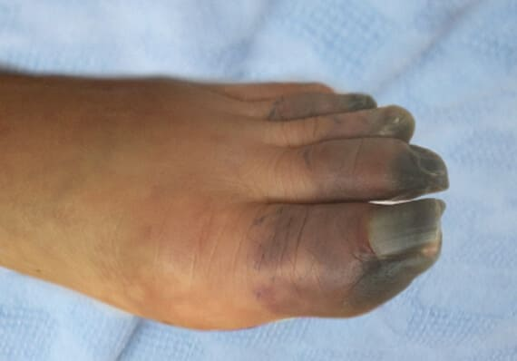
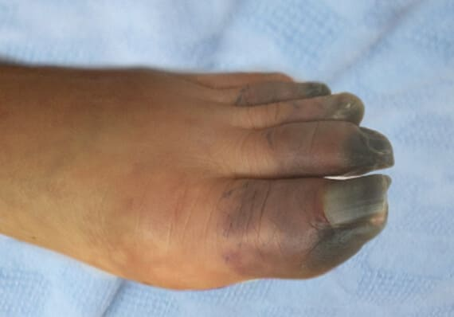
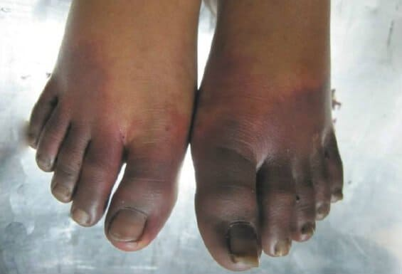
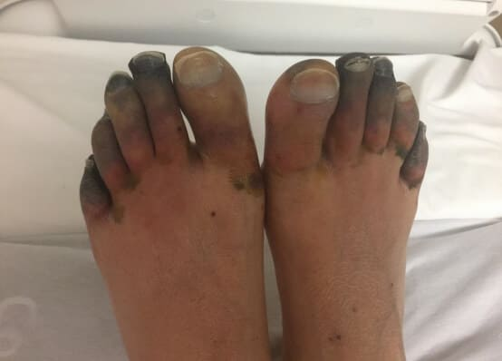

Piotr Kraśko: „Nikt nie jest odporny na cukrzycę”
Cukrzyca na dłuższą metę niszczy narządy wewnętrzne. Ponad 78% diabetyków wymaga terapii powikłań.
Fani słynnego polskiego dziennikarza Piotra Kraśko są zaniepokojeni jego nagłym zniknięciem ze wszystkich kanałów. Nagłe zmiany w wyglądzie, minimum informacji ze sprawdzonego źródła – wszystko to rodzi wiele plotek. W wywiadzie dla mediafax.pl pan Kraśko po raz pierwszy powiedział całą prawdę o swojej chorobie!
Wcześniej Kraśko zawsze prezentował się świetnie i był w dobrej formie. Ale dopiero niedawno, widzowie zobaczyli go zupełnie zdrowego.
Jako pierwsi zaalarmowali widzowie Wiadomości. W Internecie zaczęły krążyć sprzeczne informacje, że pan Kraśko zrezygnował ze zdrowego trybu życia, diety i sportu. Potem pojawiło się kilka pesymistycznych doniesień, że dziennikarz miał poważną chorobę mózgu wymagającą terapii hormonami. Nieco później prezenter telewizyjny przyznał na antenie, że chociaż przeszedł poważną chorobę, nie była ona śmiertelna. I to wszystko. Do tej pory pan Kraśko nie skomentował skandalicznych informacji, ani swojej choroby, ani cudownego uzdrowienia. Jednak teraz postanowił powiedzieć prawdę i obalić plotki.
Piotr Kraśko o tym, jak wygląda jego stan zdrowia naprawdę:
Reporter: Piotr, dwa lata temu podczas wywiadu zapytałem: „Co dalej? Czy wybierasz się na emeryturę?” Miałem rację?
Piotr Kraśko: (uśmiech) Wydaje się, że tak. Odpowiedziałem wtedy: kiedy ufasz Bogu, niczego się nie boisz. Ale kilka lat temu nie miałem pojęcia, przez co będę musiał przejść. Myślę, że Bóg zesłał mi ten test nie bez powodu. Stałem się silniejszy. A teraz mogę pomóc wielu ludziom, którzy przeżywają to samo co ja.
Reporter: Co się stało? To pytanie zadaje sobie niemal cały kraj.
Piotr Kraśko: Miałem cukrzycę typu 2. Poczułem się źle w pracy, trafiłem do szpitala, diagnozę postawili szybko. Byłem w szoku, w panice. Uważałem się za osobę zdrową…. Zacząłem myśleć o starości, o tym, jak bardzo zmieni się moje życie, o niedokończonych sprawach. Komu będę potrzebny taki schorowany? Nie wiem dlaczego, ale zacząłem sobie wyobrażać siebie w bardzo złym, niedołężnym stanie.
Reporter: Twierdzisz, że cukrzyca to choroba śmiertelna. Mi się wydaje, że jesteś optymistą. Skąd takie negatywne myśli? Wydawało się, że żegnasz się z życiem.
Piotr Kraśko: Bo tak jest. Pożegnałem się z moim aktywnym życiem. Życiem, do którego byłem tak przyzwyczajony. Wiedziałem, że cukrzyca wszystko zmieni. Cała rutyna, nawyki i ogólnie życie powinny być uzależnione od poziomu cukru we krwi. W tym momencie naprawdę zacząłem tracić wiarę, nadal nie mogę sobie tego wybaczyć.
Reporter: Piotr, ale przez cały ten czas nic nie mówiłeś. Wielu ludzi, którzy cię oglądają i szanują, martwiło się o ciebie. Dlaczego milczałeś?
Piotr Kraśko: Nie wiem. Nie mogłem o tym rozmawiać. Nie chcę żeby ludziom było mnie żal, żeby traktowali mnie w szczególny sposób. Próbowałem sobie sam z tym poradzić.
Reporter: I co nastąpiło?
Piotr Kraśko: Dalej badania, terapia. Nie będę zanudzał czytelników szczegółami, ale przepisana terapia nie przyniosła żadnych rezultatów. Wtedy zaczęła się prawdziwa rozpacz. Pamiętam pewien wywiad ze słynnym izraelskim endokrynologiem, którego nazwisko niestety zapomniałem, z kliniki Assuta w Tel Awiwie. Powiedział, że ma już dość naprawiania błędów naszych specjalistów, że mamy przestarzałą medycynę, ogólnie rzecz biorąc diabetycy po prostu nie mają szans na powrót do zdrowia, ponieważ nasi specjaliści chcą tylko zarobić jak najwięcej pieniędzy i nie dbają o wynik. Byłem tym bardzo zdenerwowany. To dwojakie uczucie. Z jednej strony dzięki swojemu zawodowi poznałem wielu specjalistów, zdolnych, uczciwych, chętnych do pracy niemalże za darmo przy terapii osób. Z drugiej strony Izrael ma jedną z najlepszych klinik endokrynologicznych, a ten specjalista jest uznanym na całym świecie specjalistą w swojej dziedzinie. Oczywiście w moim przypadku nie można było mówić o terapii w Izraelu. Jestem patriotą. Wierzę w naszą medycynę. W końcu to właśnie ta wiara prawie mnie zabiła i zdałem sobie sprawę, że izraelski specjalista miał rację.
Reporter: Teraz nie wierzysz w polską medycynę?
Piotr Kraśko: Nie do końca. Konsultowałem się z wieloma specjalistami. Stosowałem różne produkty apteczne. Moja pensja nie wystarczała już na wszystkie. Jak widać, moje słownictwo z czasem się powiększyło. Uzupełniono też skład chemiczny krwi, nawet nie wyobrażam sobie o co! Ale poprawa była krótkotrwała. Po zakończeniu terapii cukier wzrósł. Myślałem, że cukrzyca będzie ze mną już całe życie. Ale wiesz, jestem dziennikarzem. Nauczono mnie gruntownego rozumienia problemu i dopiero wtedy wyciągania wniosków. Więc zacząłem badać problem. Zalecano mi tę samą metodę terapii, co wszystkim diabetykom w naszym kraju – starali się obniżyć poziom glukozy we krwi. Ale to całkowicie błędne podejście! Mówią o tym wszyscy europejscy endokrynolodzy. Ale niestety w Polsce wszystko jest inaczej, biurokracja i mafia farmaceutyczna. Poziom glukozy spadł, ale potem znów wzrósł. A te skoki glukozy prawie mnie zabiły. Zaczęły się problemy ze wzrokiem i układem moczowym. Zacząłem się bardzo męczyć. Prawie zostałem zwolniony z pracy, ponieważ mój słuch zaczął się pogarszać i nie słyszałem już moich kolegów. W tym momencie zdałem sobie sprawę, że jest szansa na powrót do zdrowia, ale aby przezwyciężyć cukrzycę, nie trzeba obniżać poziomu glukozy, ale go normalizować. Zrozumiałem to ja, ale nie moi specjaliści…
Wtedy umówiłem się na spotkanie ze słynnym endokrynologiem Dariuszem Kowalskim, podzieliłem się z nim swoimi przemyśleniami. I potwierdził je! Rzeczywiście, jedynym sposobem radzenia sobie z cukrzycą jest normalizacja poziomu glukozy i obniżenie insulinooporności.
Reporter: Co się stanie, jeśli diabetyk zdecyduje się na terapię w bardziej tradycyjny sposób? Jakie są konsekwencje?
Piotr Kraśko: Konsekwencje mogą być różne! Cukrzyca to straszna choroba, która uprzykrza życie, a nawet może doprowadzić do śmierci. Ma wiele powikłań, takich jak śpiączka, martwica nóg lub zgorzel, utrata wzroku, dysfunkcja seksualna, kwasica ketonowa i hipoglikemia. Jeśli zignorujesz chorobę, konsekwencje mogą być nieodwracalne.
 

Gangrena stopy. Nie udało się uratować nogi

Gangrena stopy. Amputowano połowę nogi.

Gangrena stopy. Kobieta zgłosiła się do specjalisty za późno.
Reporter: Poznałeś sporo nowych słów!
Piotr Kraśko: Inaczej się nie da. Diabetycy mnie zrozumieją. Więc pan Kowalski wyjaśnił mi, że cukrzyca jest bardzo korzystną diagnozą dla firm farmaceutycznych, a nawet dla specjalistów, których te firmy opłacają. Tak, wynik mojego śledztwa dziennikarskiego jest rozczarowujący – my, diabetycy, jesteśmy tylko ofiarami, którym sprzedaje się absolutnie niepotrzebne pigułki. W Narodowym Centrum Endokrynologii opracowano i przetestowano nową metodę terapii cukrzycy już 10 lat temu. Mają środek, który eliminuje cukrzycę w 60% przypadków, a w pozostałych prowadzi do długotrwałej remisji, ale apteki go nie sprzedają!!!
Cud, który mnie uratował ... A dokładniej cud, który zesłał mi Bóg . Doktor Kowalski uspokoił mnie, mówiąc, że to kompleks całkowicie naturalnych składników, nie powoduje skutków ubocznych, jest BEZPIECZNY dla organizmu! Środek ma dobrą skuteczność dzięki zawartości ekstraktu z gymnema sylvestre, w specjalnej formie, która jest łatwo przyswajalna. Dodatkowo zawiera również witaminę E. Ogólnie zawiera dużo przydatnych mikro i makroelementów, substancji aktywnych i witamin.
Reporter: To rewelacyjna wiadomość! Twoim obowiązkiem jest poinformowanie ludzi o tym produkcie!
Piotr Kraśko: Kto mi na to pozwoli?! Jedyną nadzieją jest wywiad!
Reporter: Oczywiście, tu nie mamy cenzury! Powiedz, jak jest. Jak działa? A co najważniejsze, ile to kosztuje?
Piotr Kraśko: Jak działa? (uśmiech). robi to, co trzeba zrobić, czyli normalizuje poziom glukozy! Ponadto, zmniejsza insulinooporność, normalizuje oddawanie moczu, normalizuje proces rozkładu węglowodanów, przywraca funkcję wątroby i nerek, co jak wiadomo po zażyciu takiej ilości produktów było dla mnie bardzo ważne. Główna zaleta to naturalna kompozycja. Głównym składnikiem aktywnym jest organiczny ekstrakt z gymnema sylvestre, dodatkowo produkt zawiera dużo innych składników roślinnych. Żaden z nich nie powoduje alergii ani skutków ubocznych.
Zdobądź ze zniżką 50%Reporter: Jeśli dobrze rozumiem, przeszedłeś całą kurację …
Piotr Kraśko: Pewnie! To była chyba najlepsza decyzja w moim życiu. Wszystko, czego udało mi się dowiedzieć o cukrzycy podczas choroby, wszystkie pytania i problemy, które miałem, zostały rozwiązane dzięki ... Wyzdrowiałem szybko, w ciągu zaledwie kilku miesięcy. Teraz czuję się świetnie. W pełni wróciłem do zdrowia i z Bożą pomocą do normalnego życia i pracy, którą kocham.
Reporter: Piotr, najważniejsze pytanie dla większości naszych czytelników - to cena: ile kosztuje pozbycie się cukrzycy?
Piotr Kraśko: Już teraz możesz pozbyć się cukrzycy! Europejscy endokrynolodzy przepisują wszystkim osobom, którzy go potrzebują. Podajcie link do oficjalnej strony internetowej tego produktu i pozwólcie ludziom go zamówić. Procedura zamówienia jest bardzo prosta, ale o ile rozumiem, ilość opakowań jest ograniczona. Więc każdy, kto chce zamówić, powinien się pospieszyć. Promocja jest już aktywna, a można otrzymać z 50% zniżką do
Reporter: O ile nam wiadomo, nie jest dostępny w polskich aptekach?
Piotr Kraśko: To niestety prawda. Polscy specjaliści wolą „karmić” obywateli tonami środków przeciwbólowych i innych środków, niż angażować się w prawdziwą pomóc. Zapewniam, że endokrynolodzy przynajmniej zainteresowani progresywną terapią, znają i jego właściwości. Ale nie chcą ryzykować i przepisywać środek, którego nie ma na liście zalecanych produktów. Co więcej, o ile wiem, producent chciał wejść na polski rynek. Ale nie pozwolono mu tego zrobić, bo wymyślono setki przeszkód (mamy straszną biurokrację). Oczywiste jest, że jeśli ten środek pojawi się w aptekach, polska mafia farmaceutyczna poniesie kolosalne straty. Dzisiejsza farmakologia to tylko biznes! Nawet w Europie. Ale w Europie biznes jest kontrolowany przez państwo.
Aby zamówić należy:
- Wypełnić oficjalny formularz zamówienia , który znajdziecie
na końcu artykułu;
- poczekać na telefon konsultanta, który odpowie na wszystkie
pytania. Należy poinformować go o adresie dostawy;
- Zamówienie zostanie dostarczone w ciągu 1-3 dni.
Reporter: Dlaczego twierdzisz, że wszyscy powinni wiedzieć o ?
Piotr Kraśko: Ponieważ to wyjątkowy środek. Polecany jest dla wszystkich osób powyżej 40 roku życia. Dla poprawy ogólnego stanu zdrowia organizmu, normalizacji cukru, ale także profilaktyki cukrzycy!
Reporter: Dziękuję, zapamiętam. Cóż, podsumujmy. Moje tradycyjne pytanie brzmi: co dalej?
Piotr Kraśko: Oczywiście z przyjemnością dalej będę pracować, mam dużo nowych pomysłów i przemyśleń. Jestem wdzięczny Bogu i losowi za tę chorobę i za cudowne uzdrowienie. Oznacza to, że musiało się to wydarzyć. Teraz pomogę ludziom z cukrzycą. Osobom dbającym o swoje zdrowie i chcącym uniknąć tej choroby.
Środek jest certyfikowany zgodnie z międzynarodowymi wymogami, przeszedł 2 fazy badań klinicznych oraz posiada wszystkie niezbędne licencje i certyfikaty normy ISO.
Reporter: Możesz powiedzieć coś bezpośrednio do czytelników!
Piotr Kraśko: Cukrzyca to naprawdę przerażająca choroba. Dotyka tysięcy ludzi na całym świecie. Kto będzie następny?! A co najważniejsze, wszyscy ci ludzie tylko pogarszają cukrzycę, marnują czas na bezsensowne poszukiwania cudownych środków i metod. Ludzie, nie traćcie czasu! Uzyskajcie pomoc, której potrzebujecie już teraz. Środek jest nadal dostępny. pomoże oczyścić Twój organizm z glukozy, nie tylko zapobiegnie niebezpiecznym skutkom cukrzycy, ale także przywróci organizm. Cukier to naprawdę biała śmierć, a podwyższony poziom cukru we krwi jest jeszcze gorszy. Niszczy narządy wewnętrzne, obniża ogólne samopoczucie. Tak więc już po kilku dniach przyjmowania poczujesz pozytywne zmiany. Drodzy przyjaciele, zadbajcie o swoje zdrowie! Działajcie póki jest czas! Niech was Bóg błogosławi!
Komentarze:
Karol Krawczyk, Sopot
Jak długo mamy czekać?! Jest sprawdzony, skuteczny środek na cukrzycę za 198 zł! A nam nadal przepisują niepotrzebne i drogie tabletki! A potem ludzie umierają od gangreny na nogach!
Asia Kozłowska, Poznań
Panie Piotr, jest Pan świetnym prowadzącym i zawsze pana lubiłam. A teraz jest mi Pan jeszcze bliższy. Ja też mam cukrzycę typu 2. Próbowałam wszystkiego! Porzuciłam już nadzieję, ale zaufam Panu. Czuję, że ma Pan racę. Zamówiłam online za . Uwierzę w cud!
Kasia, Opole
Mam 50 lat. Dowiedziałam się o 2 lata temu, uratował mi życie.
Cukrzyca minęła i nie wraca! Ludzie, pan Piotr ma rację. Nie traćcie
czasu i stosujcie skuteczną metodę terapii!
Dariusz Zalewski, Branice
Piotr, przykro mi, że musiałeś przez to przejść. Wspaniale, że wyszedłeś z tego!
Łucja Sadowska, Tarnowskie Góry
Pan Piotr zawsze wydawał mi się miły i trochę tajemniczy. Teraz widzę, że się nie myliłam. Uczciwa, przyzwoita osoba! Dziękuję za szczerość i powodzenia.

Aniela Kozłowska, Łódź
Witam wszystkich! Na stronie Krajowego Centrum Endokrynologii napisano, że opakowań zostało bardzo mało! Wygląda na to, że mamy dużo diabetyków! Zamówiłam mamie, powiedzieli, że dostawa będzie kurierem.
Marek Krupa, Jarocin
Cukrzyca to naprawdę przerażająca choroba. Najbardziej martwiło mnie częste oddawanie moczu. Koszmar. Dręczyła mnie też ciągła senność. Albo śpisz, albo oddajesz mocz. uratowało mi życie. Teraz cukrzyca to już przeszłość, jestem szczęśliwy.
Alina, Kołobrzeg
Wydałam na terapie tyle kasy, że nie wiem co bym za to mogła sobie kupić... Te same środki, o których mówił pan Piotr. Nie wiem jak moje nerki... Ale miałam szczęście. Trafiłam na dobrego specjalistę. Polecił mi . Teraz codziennie mu dziękuję. I cieszę się życiem! Jeśli masz podobne problemy lub jesteś w grupie ryzyka, zamów . To naprawdę pomaga!
Elżbieta
Od miesiąca biorę , czuję się znacznie lepiej! O cukrze nawet nie pamiętam, poprawił się mój ogólny stan zdrowia – w uszach nie szumi, oddech wrócił do normy.
Anna Frączek
jest jedynym produktem na cukrzycę, który naprawdę pomaga. Po
raz pierwszy od dłuższego czasu uczucie strachu przed chorobą
minęło.
Melania
Udało mi się zamówić dla mamy. Od dawna szukam tego produktu (specjalista powiedział o nim prawie szeptem). Dzięki za stronę, dobra robota!!!!
Diana
Potwierdzam, że pomaga! Jakość życia znacznie się poprawiła - cukier już od miesiąca jest w normie, zniknęły obrzęki, nawet trochę schudłam, zaczęłam lepiej spać, pojawiła się radość życia. Polecam.
ZDOBĄDŹ za !
Michał Dąbrowski, Radom
Wielkie dzięki za info o . Zawsze martwiłem się poziomem cukru, cała moja rodzina miała cukrzycę. Zamówiłem zaraz po przeczytaniu tego artykułu. Dzięki Bogu udało mi się otrzymać środek za , serwis mówi, że niewiele zostało. Biorę go dopiero od tygodnia, ale już czuję pozytywne zmiany! Senność minęła, mam więcej energii do życia!
Dr. Grzegorz
Rzeczywiście, jest to bardzo dobry środek zaradczy. Ale w szpitalu tego nie używamy, pracujemy według ścisłych rekomendacji, a wszelkie przejawy inicjatywy karane są grzywną. Niestety trudno w naszym kraju pozostać wiernym przysiędze.